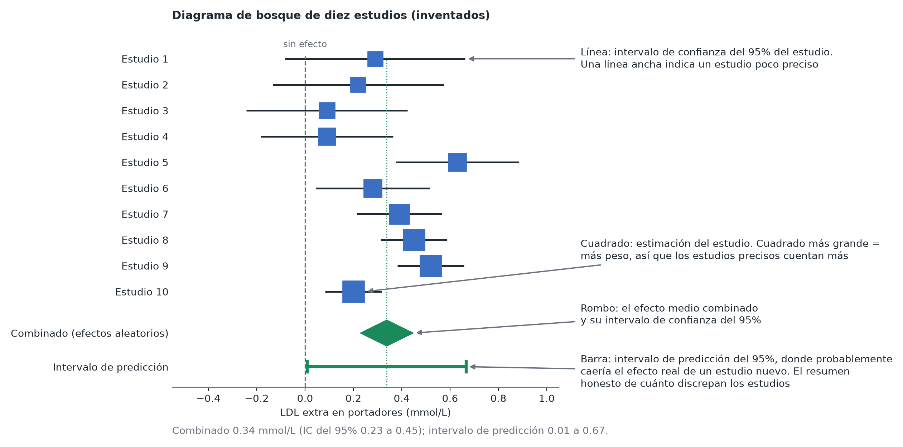

Metaanálisis
En pocas palabras: un metaanálisis combina las estimaciones de varios estudios sobre la misma pregunta en una única respuesta, dando más peso a los estudios más precisos, y te dice cuánto discrepan los estudios entre sí. Es estadística en la que cada «observación» es un estudio entero.
Por qué combinar estudios
Mia no es la única persona que estudia su variante de LDLR: se han publicado diez estudios, cada uno en una clínica o población distinta y con su propia estimación del efecto de la variante sobre el colesterol LDL. Algunos encontraron una asociación clara, otros apenas nada, uno no encontró nada. Fijarse en qué estudios fueron «significativos» es una mala forma de resumirlos (los ensayos pequeños suelen ser no significativos incluso cuando el efecto es real; véase Tamaño muestral y potencia). Un metaanálisis plantea en cambio dos preguntas mejores: ¿cuál es el efecto promedio y cuánto varía de un estudio a otro?
Qué entra: un efecto y un error estándar por estudio
Cada estudio aporta una fila: una estimación del efecto y su error estándar (cuán incierta es esa estimación). Todos los estudios deben medir el efecto en la misma escala, por ejemplo la diferencia de colesterol LDL medio en mmol/L, o un efecto estandarizado cuando los estudios usaron instrumentos distintos (véase Tamaño del efecto). Para desenlaces de sí/no, la escala habitual es el logaritmo de la razón de odds o de la razón de riesgos. Se combinan estimaciones, nunca valores p ni veredictos de «significativo / no significativo».
La idea central: ponderar por la precisión
La estimación combinada es una media ponderada, y el peso de cada estudio es la inversa de su varianza:
peso = 1 / (error estándar² + τ²)
Un ensayo grande y preciso cuenta más que uno pequeño y ruidoso. El término adicional τ² (que se explica a continuación) vale cero en la versión más simple del modelo.
Efecto común o efectos aleatorios
- Modelo de efecto común (de «efecto fijo»): asume que hay un único efecto verdadero y que cada estudio se desvía de él solo por azar. La estimación combinada responde a «¿cuál es ese único efecto?». Es razonable para replicaciones casi idénticas (el mismo protocolo ejecutado en varios laboratorios).
- Modelo de efectos aleatorios: asume que cada estudio tiene su propio efecto verdadero (distinta ascendencia, dieta, mezcla de edades, técnica de laboratorio, población), y que estos efectos verdaderos se dispersan alrededor de un promedio con dispersión τ. La estimación combinada responde a «¿cuál es el efecto promedio en contextos como estos?». Como el intervalo incluye las diferencias entre estudios, es más ancho y más honesto.
En las ciencias de la vida los estudios casi nunca son replicaciones exactas, así que los efectos aleatorios son la opción por defecto sensata. Elige el modelo por lo que crees sobre los estudios, no porque uno dé un valor p menor.
¿Cuánto discrepan los estudios? (heterogeneidad)
- τ (tau): la desviación típica de los efectos verdaderos, en las mismas unidades que el efecto. «τ = 0.7 kg» significa que los efectos verdaderos suelen diferir unos 0.7 kg de la media.
- I²: la proporción de la variabilidad entre las estimaciones que refleja diferencias reales y no azar. Aproximadamente, 25 % es bajo, 50 % moderado y 75 % alto; estas etiquetas son convenciones, no reglas. I² además crece con el tamaño de los estudios, así que puede parecer alta con estudios precisos aunque las diferencias sean pequeñas en términos prácticos: léela junto con τ.
- Intervalo de predicción (prediction interval): el rango en el que cabría esperar que cayera el efecto verdadero de un estudio nuevo. Suele ser el número más útil: una media combinada de 0.34 mmol/L con un intervalo de predicción de 0 a 0.7 mmol/L cuenta una historia muy distinta de la misma media con un intervalo de 0.3 a 0.4 mmol/L. Preséntalo junto con el intervalo de confianza de la media. Hacen falta varios estudios para que sea creíble.
El diagrama de bosque
La imagen estándar (forest plot): una fila por estudio (un cuadrado para su estimación, con tamaño proporcional al peso, y una línea para su intervalo) y un rombo al final para la estimación combinada. Míralo antes de leer ningún número. Si los intervalos apenas se solapan, o un estudio queda muy lejos del resto, el promedio combinado puede no describir a nadie.

Dónde encaja en este módulo
Un metaanálisis de efectos aleatorios es un modelo multinivel con los estudios como grupos: la estimación de cada estudio se acerca («se encoge») hacia la media global, y cuanto más ruidoso es el estudio, más se acerca. Véase Datos agrupados y jerárquicos. Con pocos estudios, una versión bayesiana suele ser más estable, porque te permite expresar cuán grandes crees que podrían ser plausiblemente las diferencias entre estudios.
Antes de fiarte de una cifra combinada, lee Metaanálisis: sesgos y trampas: un metaanálisis solo es tan bueno como los estudios que reúne y la forma en que se reunieron.